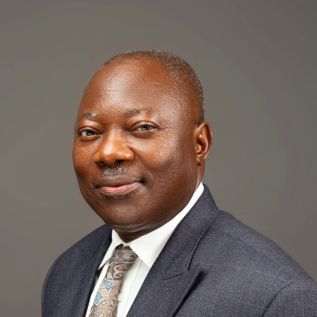
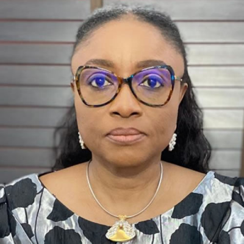
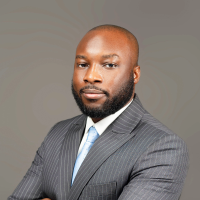
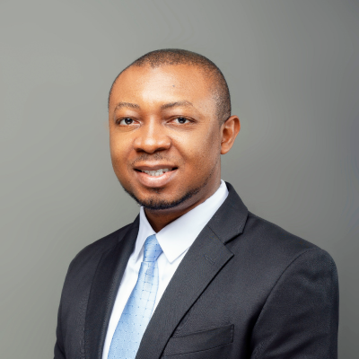
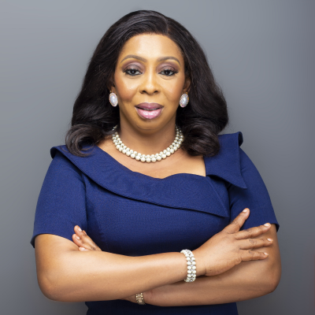
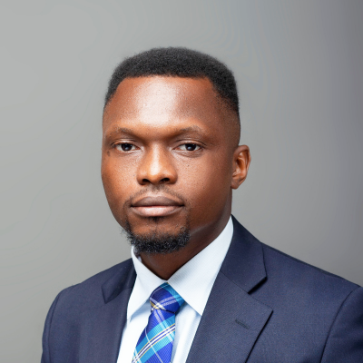

Our People.
At TOLP, our lawyers are some of the best legal minds available on the market and are always on hand to put their skills to good use by helping clients solve their most important legal problems. We appreciate the value of both prompt action and thoroughness, and are able to provide some of the most creative, skilled and compelling advocacy and representation available.
“The team at Tayo Oyetibo LP are passionate, committed and competent. They take out time to listen to your needs and proffer solutions.”
TAYO OYETIBO, SAN
Chief Counsel
Tayo Oyetibo is the Chief Counsel and Founding Partner of the Firm and has been in legal practice in Nigeria for 40 years. A consummate advocate, reputed for his integrity and professional skills in the area of dispute resolution, particularly litigation and arbitration, Tayo Oyetibo was conferred with the prestigious rank of Senior Advocate of Nigeria (SAN) in 2003. Tayo has a wealth of experience in dealing with complex litigations, and most of the cases handled by him are regularly reported in notable law reports in Nigeria. His counsel is sought after for the most complex and high-profile litigations in Nigeria.
He regularly advises on a broad range of high-profile commercial transactions. His expertise and skill in the area of dispute resolution has been widely recognized. He is an experienced arbitrator in both domestic and international arbitrations and is a Fellow of both the Chartered Institute of Arbitrators (UK) and the Institute of Construction Industry Arbitrator.
In the area of constitutional law, he was a member of a team of consultants to the National Assembly of Nigeria, appointed by the United Nations Development Programme. He is a prolific writer and a highly sought-after speaker. He has written many articles on diverse subjects of law and presented papers at various international and local law conferences, seminars and workshops.
Since 1995, he has been a guest lecturer at the Nigerian Institute of Advanced Legal Studies, Lagos, where he delivers a lecture on a topic in practice and procedure once a year. He is a Fellow of the Nigerian Institute of Advanced Legal Studies. He is also a Patron and Life Member of the International Law Association (Nigerian Branch), Chairman of the Board of Directors of First Quiver School in Lagos and a member of the Body of Benchers.
Over the years he has been recognized by several international legal guides and rankings as a leading disputes resolution lawyer in Nigeria, including as follows:
- “A highly experienced practitioner with very good advocacy skills and a strong work ethic” - Chambers and Partners (2015)
- "Very intelligent and his knowledge base is vast – he works through complicated cases, making them look quite simple" - The Legal 500 (2015)
- “Peers highlight Tayo Oyetibo as a "Well-rounded" and "Good litigator." He possesses long standing experience representing clients in myriad complex litigation and arbitration cases. His knowledge extends beyond commercial disputes, with distinct capabilities representing clients in constitutional contentious issues.”- Chambers and Partners (2019)
- “Tayo Oyetibo is heralded by sources as "A very brilliant and experienced advocate" and "An outstanding performer in terms of litigation experts in Nigeria." He is noted for his experience in precedential cases in the Supreme Court, and his clients include oil and gas companies and governmental figures.” - Chambers and Partners (2021)
- “Tayo Oyetibo SAN is one of the foremost litigation lawyers in Nigeria, noted for his experience in precedential cases in the Supreme Court. His clients include banks, oil and gas companies and government entities. Strengths: "Tayo Oyetibo is a solid and brilliant lawyer."- Chambers and Partners (2023)
- “Tayo Oyetibo SAN is someone you go to at the first smell of trouble. You will receive quality advice and his attention to detail and personal touch on every case he handles is excellent.”- The Legal 500 (2023)
ABIOLA TAYO-OYETIBO
Partner
Abiola Tayo-Oyetibo is the Partner (General Management) of the Firm and heads the Firm's Corporate and Commercial Practice Group. She possesses over thirty-five years' experience in the area of corporate law. Prior to joining the Firm in 2010 as a Partner, she worked in-house at one of Nigeria’s leading commercial banks. Her areas of expertise and experience include debt recovery, immigration, secured credit, real estate and regulatory compliance.
Mrs. Tayo-Oyetibo regularly advises local and international clients on investments in several areas of the Nigerian economy. Her practice includes advising high net worth individuals with respect to the Citizenship by Investment programme run by the government of Antigua and Barbuda. She has been recognised by The Legal 500 as a 'Recommended Lawyer' in Nigeria. Mrs. Tayo-Oyetibo is a Certified Trainer in Elocution, Public Speaking, Grammar, Communication and Soft skills.
MOFESOMO TAYO-OYETIBO
Partner
Mofesomo is a Partner at the Firm and heads the Commercial Law and Arbitration Practice. He is a graduate of the University of Leeds and holds a Master's Degree in Commercial Law from the University of Bristol.
Mofesomo's core area of practice is commercial disputes resolution and he has invaluable experience in the arbitration and litigation of a wide range of domestic and international disputes covering the areas of banking, commercial crime, contracts, corporate insolvency, oil & gas, marine and general insurance, securities, shipping and international trade and oil and gas. His work also includes providing advisory services to clients on the legal aspects of their entry into the Nigerian market or ongoing operations in the country.
Mofesomo has written on arbitration, commercial law and public interest matters and his writing is regularly published. He is an alumnus of the Leading Professional Service Firms course at the Harvard Business School and the Institute of Maritime Law at the University of Southampton. Mofesomo is a member of several professional bodies, such as the Institute of Directors, International Council for Commercial Arbitration, Institute for Transnational Arbitration, Lagos Court of Arbitration and the International Law Association, where he Chairs the Committee on International Law and New Technologies.
He is a Fellow of the Chartered Institute of Arbitrators (UK) and Prime Disputes and is on the Panel of Neutrals of the Nigerian Communications Commission and World Intellectual Property Organization. Mofesomo sits on the Board of Governors of Dowen College Lagos, a renowned secondary school in Nigeria, the Advisory Board of the Lagos Court of Arbitrators-Young Arbitrators Network and Management Board of the Pistis Life and Leadership Institute. In 2023 Mofesomo was recognized by The Legal 500, an international legal research and ranking body, as a Next Generation Partner in the area of dispute resolution and received the following testimonial:
- ‘Mofesomo Tayo-Oyetibo is already carving out a name for himself. He is very intelligent and perceptive, and he will definitely be a shining light in the years to come.’- The Legal 500 (2023)
PAUL MGBEOMA
Managing Associate
Paul Mgbeoma is a result-oriented and seasoned lawyer with over a decade’s practice experience in various areas of law. He is a Managing Associate and Head of Associates and also heads the Public Law Litigation Practice Unit at Tayo Oyetibo LP.
He has successfully represented a diverse range of clients on significant matters, including high-net-worth individuals, multinational corporations and governments. His experience includes advising and representing clients such as high net-worth individuals, large corporations and governments on complex legal issues concerning administrative law, constitutional law, medical law, environmental law and criminal law. In the area of electoral litigation, he has represented clients in relation to challenges to elections in respect of States Houses of Assembly, House of Representatives, Senate and Governorship.
Paul is a Notary Public of the Federal Republic of Nigeria and a Fellow of the Institute of Chartered Mediators and Conciliators of Nigeria.
CHIDINMA AMUTA
Practice Manager
Chidinma Amuta is the Practice Manager at Tayo Oyetibo LP, where she leverages her extensive experience in Compliance, HR, and management. Her professional strengths lie in optimizing operational processes, providing exceptional client support, and fostering effective teamwork. Prior to joining TOLP, she has had the privilege of briefly managing her own firm with 2 other partners, and working in FMCG, where she has gained valuable insights into the nuances of management.
OLUBUKOLA OJURI
Senior Associate
Olubukola is a Senior Associate at Tayo Oyetibo LP. She holds a Bachelor of Laws (LLB) and Master of Law (LLM) Degrees from the University of Kent.
Her practice areas span across intellectual property, corporate and commercial litigation and alternative dispute resolution. She regularly represents clients before several trial and appellate courts in Nigeria. Her recent experience includes representing a state governor in post-election litigation challenging his election to office as governor of the state. Olubukola’s work includes advising clients on the identification, protection, exploitation, management and enforcement of their intellectual property rights in Nigeria. She is passionate about professional development and has attended several trainings and conferences on Intellectual Property, including at the International Intellectual Property Law Association and Intellectual Property Institute of Nigeria, where she completed the Chartered Trademark, Copyright, and Patent Attorney Programs.
She is a Fellow of the Chartered Institute of Local Government and Public Administration of Nigeria and a Lagos Multi-Door Courthouse (LMDC) Accredited Mediator.
Her hobbies include music, traveling and swimming.
ADEYINKA ADEGBITE
Senior Associate
Adeyinka is a Senior Associate at Tayo Oyetibo LP. He routinely represents clients in litigation matters arising from diverse areas of law, including criminal law, commercial law, matrimonial causes, property law and administration of estates law. He has significant experience of representing clients at both trial and appellate courts in Nigeria.
Adeyinka is a mediation practitioner and has acted as counsel to clients at mediation sessions relating to a diverse range of disputes.
ANTHONY EJERE
Senior Associate
Anthony is a senior associate in the Firm’s dispute resolution practice. He is an experienced litigation Lawyer with a very good understanding of Nigerian Law and the practice and procedures of superior courts and tribunals in Nigeria. Anthony has represented a wide range of clients, including multinational corporations, banks, and other financial institutions in matters concerning commercial law, corporate insolvency, company and partnership disputes, chieftaincy, criminal law and constitutional law.
JOHNSON SAMUEL
Associate
Johnson Samuel is an Associate in the Firm’s Dispute Resolution Practice and has gathered significant experience in litigation and arbitration by representing the Firm’s clients in different Courts and Arbitral Panels. Johnson’s practice experience cuts across diverse areas of law such as corporate and commercial litigation and arbitration, contract, insurance, tax, employment, oil and gas, banking, aviation, maritime, energy, and criminal law.
OPEYEMI OWOLABI
Associate
Opeyemi Owolabi is an Associate in the Firm’s Dispute Resolution Practice and routinely represents clients in the litigation of disputes concerning human rights law, electoral law, constitutional law, criminal law, property law, copyright law, sports law and commercial law. He has significant experience in the area of public interest litigation and has represented a wide range of clients in constitutional and administrative law matters of wide public interest, including at the ECOWAS Court of Justice.
LEMEA WAYIH
Associate
Lemea is an Associate in the Firm’s Arbitration and Commercial Litigation Practice. He represents clients in litigations and arbitrations of disputes concerning the areas of commercial law, shipping, and Intellectual property.
TODIMU ADEYEMI
Associate
Todimu Adeyemi is a legal practitioner with several years of experience in the area of litigation. He has experience in the litigation of commercial and employment law disputes as well as criminal defence matters in the high courts and appellate courts.
TOPE APANISILE
Associate
Tope is an associate at Tayo Oyetibo LP.Tope represents clients in property and public law litigation matters in the high courts and appellate courts. He is an Associate member of the Chartered Institute of Arbitrators (UK)
Tope enjoys singing hymns, partaking in community service and playing table tennis.
ZACHARIAH GIRA
Associate
Zachariah is an associate in TOLP’s corporate and commercial law practice. He is a highly skilled and experienced lawyer with a strong background in corporate and commercial law. Zachariah has developed a reputation for providing sound legal advice and representation to clients by helping them navigate complex legal issues and achieve their business goals.
He is an experienced company secretary and routinely advises clients on matters of administrative and regulatory law, corporate law, commercial law, property law and intellectual property. Zachariah has a litigation background and brings this to bear in advising and representing clients on matters involving corporate and commercial litigation.
DANIELLA AJAYI
Associate
Daniella is an associate in TOLP’s corporate and commercial law practice. She provides advisory services to clients on corporate, entertainment and commercial law matters, including drafting of various forms of documentation.
Daniella is a Chartered Secretary and Associate member of the Institute of Chartered Secretaries and Administrators of Nigeria and Institute of Chartered Mediators and Conciliators. She is a member of the International Law Association (Nigerian Branch)
Daniella is a prolific writer, an entertainment Lawyer, and a broadcast journalist at LAW FM 103.9, where she hosts programs and enlightens the public on several areas of law.
She is the Editor of the Firm’s Newsletter – THE TOKEN.
HENRY LIGARI
Associate
Henry Ligari is an Associate in the Firm’s Dispute Resolution Practice. He routinely represents clients in disputes arising from commercial and property transactions, matrimonial causes, employment, and trade union related matters, among others. He also advises clients in property transactions, debt recovery, and regulatory compliance. He has a flair for dispute resolution and Technology Law.
Jessica Abisoye Adeola Ajayi
Associate
Jessica Abisoye Adeola-Ajayi attended the University of Ilorin and graduated in the year 2013, she was called to the Nigerian bar in the year 2014 and has been in active practice ever since. Her core areas of practice include General Litigation, Dispute-Resolution, Property Transaction and Family Law. She is a member of the Nigerian Bar Association (NBA), The Nigerian Bar Association Women Forum, and The International Federation of Women Lawyers.
Joseph Oyekoya Felix
Associate
Joseph Oyekoya Felix is a law graduate of the Nigerian Law School (2014), and the prestigious Ahmadu Bello University, Zaria (2013). He is a highly focused and solution driven legal professional with 10 years’ experience in regulatory affairs, corporate and legal advisory Services. He is an active member of the Nigerian Bar Association, International Mediation Institute, LegalTech & Innovation Network, WIPO Academy Community, among other prestigious institutions.